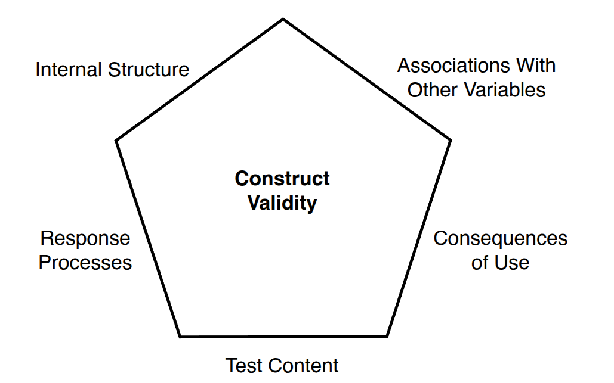
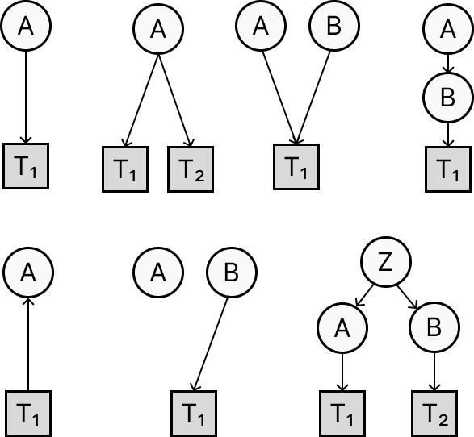
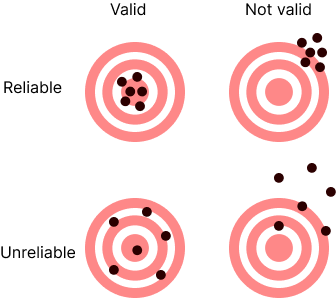
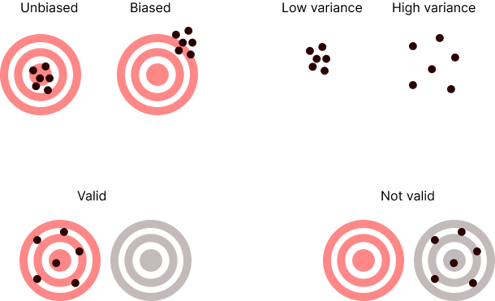

“valid” is a term that is used in many different contexts and with rather different meanings (see Wikipedia/Validity).
We will focus specifically on the validity of measurements.
Validity is arguably the most important concept in measurement theory.
There’s a long and complex history in psychology, spanning more than a century—there is still no consensus and lots of confusion.
Overview of key ideas on test validity
References:
“A test is valid if it measures what it purports to measure.”
Kelley (1927, p. 14)
Kelley, T. L. (1927). Interpretation of educational measurements. New York: Macmillan.
This remains the most common definition but this view has been considered too simplistic and not offering guidance on how to determine what a test measures.
The 1954 APA Technical Recommendations introduced a tripartite taxonomy:
Content validity—does the test adequately sample the relevant content domain?
Criterion validity—does the test predict anything we care about in the real world?
Construct validity—does the test measure the intended theoretical construct?
| Type | Subtype | Definition |
|---|---|---|
| 1. Content validity | “Representativeness” | Does the test adequately sample the relevant content domain? |
| 2. Criterion validity | Predictive validity | Does the test predict an external criterion measured in the future? |
| Concurrent validity | Does the test correlate with an external criterion measured at the same time? | |
| 3. Construct validity | Convergent validity | Does the test correlate with measures of related constructs? |
| Discriminant validity | Does the test not correlate with measures of unrelated constructs? |
Face validity: Does the test appear to measure the right thing (to test-takers)?
Two key threats: construct-irrelevant content (items measuring something else) and construct underrepresentation (missing important facets).
Not to be confused with face validity—whether the test looks valid to the person taking it.
Imagine going to a Math exam and getting questions about French grammar. What would you do?
What if you’re told that scores on French grammar correlate highly with scores on Math?
face validity:
Predictive validity: the test predicts a criterion measured in the future.
e.g., an intelligence test administered at age 7 correlates with academic performance at 18.
Concurrent validity: the test correlates with a criterion measured at the same time.
e.g., an intelligence test administered at age 18 correlates with academic performance at 18.
Postdictive validity: the test predicts a criterion measured in the past.
e.g., an intelligence test administered at age 18 correlates with academic performance at 7.
Introduced by Cronbach & Meehl (1955):
“Construct validity must be investigated whenever no criterion or universe of content is accepted as entirely adequate to define the quality to be measured.”
The central concept here is called a nomological network—it is a theoretical web of laws and relationships in which the construct is embedded.
Cronbach, L. J., & Meehl, P. E. (1955). Construct validity in psychological tests. Psychological Bulletin, 52(4), 281–302.
Suppose we develop a new anxiety questionnaire.
Theory* predicts that anxiety should:
Correlate with (convergent):
Not correlate with (discriminant):
If observed correlations match this predicted pattern, we have construct validity evidence for the questionnaire.
*This is made up: not real theoretical predictions.
“[…] construct validation is not accomplished by any single study but is built up over many investigations.” (Cronbach & Meehl, 1955)
Cronbach, L. J., & Meehl, P. E. (1955). Construct validity in psychological tests. Psychological Bulletin, 52(4), 281–302.
Messick (1995) called the trinitarian approach “fragmented” and “incomplete”.
Are these really three separate things—or three aspects of one thing? And crucially: none of them considers the consequences of test use.
Messick (1989) argued that all validity is construct validity.
“Validity is an integrated evaluative judgment of the degree to which empirical evidence and theoretical rationales support the adequacy and appropriateness of inferences and actions based on test scores.” (Messick, 1989, p. 13)
Messick, S. (1989). Validity. In R. L. Linn (Ed.), Educational Measurement (3rd ed., pp. 13–103). American Council on Education.
Validity is about inferences from test scores, not the test itself.
Validity is a matter of degree, not a binary property.
Validity must take into account the consequences of test use.
Validity evidence must be continuously accumulated—it is never “established” once and for all.
The five facets of construct validity

This is very similar to the currently most accepted view:
AERA, APA, & NCME (2014). Standards for Educational and Psychological Testing. AERA.
Does the content of the test represent the intended construct domain?
This is similar to content validity in the trinitarian view.
Are test-takers actually engaging in the cognitive processes the construct requires?
You can’t just assume that people are going to do what you expect them to do.
e.g., cheating vs not cheating on an exam.
Do the items and components of the test relate to one another as the theory predicts? This is called factorial validity.
Example: the Rosenberg Self-Esteem Inventory (RSEI) measures a single coherent construct—so all 10 items should form one tight cluster. A multidimensional inventory should show distinct clusters for each component.
Our theory of a construct predicts a specific pattern of associations with other variables.
Combines criterion-related and construct validity from the trinitarian view.
aka “Consequential validity”: validity includes the social consequences of test use.
“The social consequences of testing […] are also relevant to validity judgments, not as a separate component but as integral evidence.” (Messick, 1989)
Example: a Math test provides accurate measures but demotivates low performers and is used to cut funding to some schools.
This is a controversial issue!
Messick, S. (1989). Validity. In R. L. Linn (Ed.), Educational Measurement (3rd ed., pp. 13–103). American Council on Education.
Things have grown out of control, the concept of validity has become too complex and less palatable.
Borsboom, Mellenbergh & van Heerden (2004) proposed a new perspective:
“A test is valid for measuring an attribute if and only if (a) the attribute exists and (b) variations in the attribute causally produce variations in the measurement outcomes.”
Borsboom, D., Mellenbergh, G. J., & van Heerden, J. (2004). The concept of validity. Psychological Review, 111(4), 1061–1071.
The attribute must actually exist—not just be a convenient theoretical label.
Changes in the attribute must cause changes in the test scores.
This is an ontological claim—validity requires that the world is a certain way.
This is much stronger than Messick’s view: validity is not just about inferences, but about reality.
Borsboom, D., Mellenbergh, G. J., & van Heerden, J. (2004). The concept of validity. Psychological Review, 111(4), 1061–1071.
causal diagrams

everything correlates with everything: nomological approach is not feasible in practice
correlation is not sufficient: you must demonstrate causality
theories are generally wrong: so if construct validation fails it’s not clear why.
criterion validity does not imply causality
perfect correlation does not imply identity (e.g., thunder and lightning)
Distinguish “validity” from “validation”
Use term “valid” for describing the presence or absence of causal influence between construct and measure;
Use other terms for other aspects (e.g., “quality”, “acceptability”, “safe”).
Focus more on understanding how exactly a construct causes the responses (i.e., mechanisms, processes) rather than on patterns of correlations between things we don’t really understand.
How exactly do variations in \(A\) cause variations in \(T_1\)?
How does validity relate to reliability?
Are they coupled or independent?

The controversial case: can an unreliable measure be valid?
my view:

Validity is a property of the test vs a property of the interpretation of its scores
Validity is all-or-none (like Truth) vs a matter of degree
Validity is purely psychometric vs includes social consequences of test use
The attribute being measured need only be a theoretical label vs must actually exist as a causal entity
Relationships are causal vs informational
Based on the 3 views presented: is the tear test a valid test of witchery? Why?
OR
Considering the case of the thermometer: which of the views on measurement validity makes most sense to you? Why?